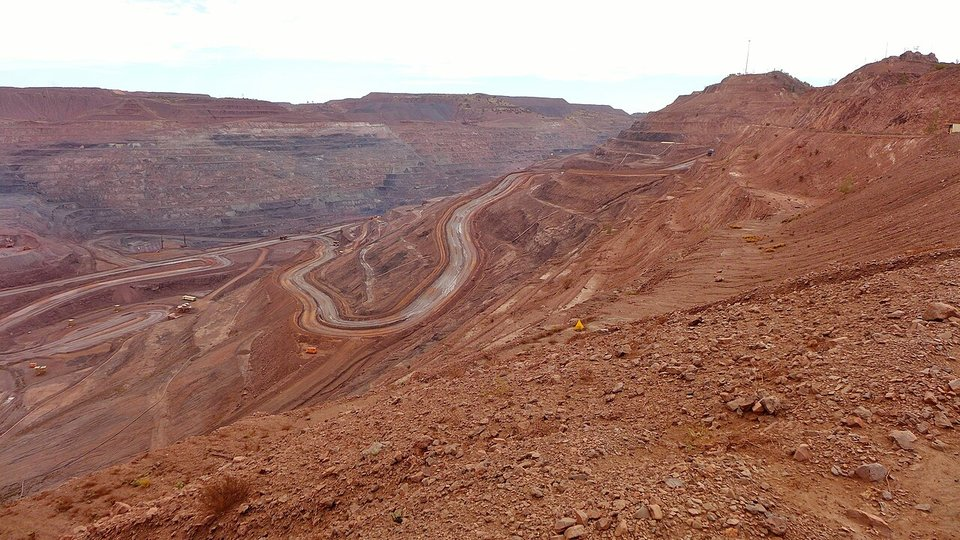
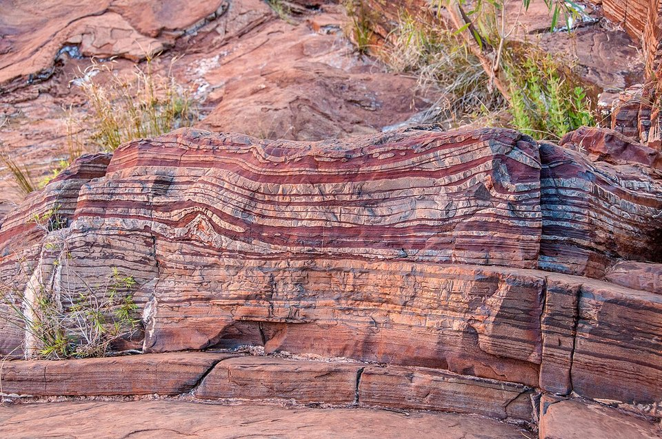
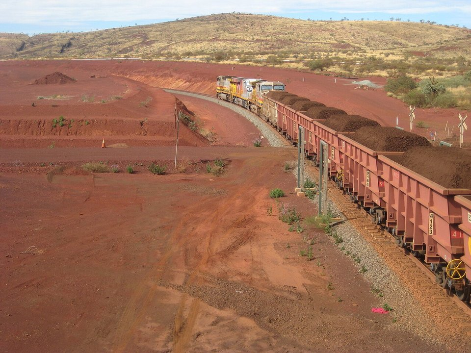

STEEL 101 · MINING · 2026.10
鐵礦砂從哪裡來：全球礦區分布與開採技術
鋼鐵潮流工作室 · 發布 2026.10.04

本期重點
每煉一噸高爐鐵水，大約需要 1.5 到 1.6 噸鐵礦砂。全球每年開採約 25 億噸鐵礦砂，其中超過一半來自澳洲與巴西；七成產量跨洋運送，中國一國就買下全球約七成的進口量。這一課從礦石怎麼形成、礦在哪裡，講到礦怎麼挖出來、怎麼送進鋼廠。
- 礦區高度集中。 西澳皮爾巴拉一地就占全球約四分之一產量，巴西卡拉加斯與米納斯吉拉斯緊追在後。
- 露天開採是主流。 鐵礦砂量大、價低，只有規模化的露天開採才划算；礦體太深才轉地下開採。
- 新礦區崛起。 幾內亞 Simandou 高品位礦 2025 年底開始出口，將改寫海運鐵礦砂的供應版圖。
- 技術重點在「省人、省油、提品位」。 無人礦卡、自駕列車、無卡車採礦與選礦造粒，是現代礦山的四大技術方向。
鐵礦砂怎麼形成

全球大型鐵礦幾乎都源自「條帶狀鐵礦層」（Banded Iron Formation，BIF）。約 25 億年前，海洋中的溶解鐵遇上光合作用產生的氧氣，氧化沉澱成一層層含鐵沉積物。之後經過數億年的風化淋濾，把矽質帶走、讓鐵富集，才形成今天能直接開採的高品位礦。
| 礦物 | 化學式 | 理論含鐵量 | 特性與代表礦區 |
|---|---|---|---|
| 赤鐵礦 | Fe₂O₃ | 69.9% | 最主要的商用鐵礦；高品位者破碎篩分後即可出貨（直運礦）。巴西卡拉加斯、西澳皮爾巴拉 |
| 磁鐵礦 | Fe₃O₄ | 72.4% | 具磁性，可用磁選提純；原礦品位常偏低，需細磨選礦再造粒。瑞典 Kiruna、中國冀東、美國明尼蘇達 |
| 針鐵礦／褐鐵礦 | FeO(OH) | 62.9% | 含結晶水，燒結時失重較多。西澳部分礦區 |
全球礦區分布
| 礦區 | 國家 | 主要業者 | 特色 |
|---|---|---|---|
| 皮爾巴拉（Pilbara） | 澳洲 | Rio Tinto、BHP、FMG、Roy Hill | 全球最大礦區，2025 年產量約 9.7 億噸、占全球約 26%；赤鐵礦與針鐵礦，品位約 56–62%；鐵路直通黑德蘭港、丹皮爾港 |
| 卡拉加斯（Carajás） | 巴西 | Vale | 全球最高品位的大型礦區之一（約 65%）；S11D 無卡車採礦，Serra Sul 擴產 2,000 萬噸預計 2026 下半年試車 |
| 米納斯吉拉斯（四邊形鐵礦區） | 巴西 | Vale、CSN | 老牌礦區；2019 年 Brumadinho 尾礦壩潰堤後，加速改用乾式堆存 |
| 奧迪薩、恰蒂斯加爾 | 印度 | NMDC、Tata Steel、JSW | 以內需為主，隨印度鋼產擴張持續增產 |
| 冀東、鞍本、攀西 | 中國 | 鞍鋼、河鋼、首鋼等 | 多為低品位磁鐵礦（原礦約 30%），開採與選礦成本高，進口依存度高 |
| Simandou | 幾內亞 | WCS（中資財團）、SimFer（Rio Tinto、中鋁） | 品位約 65–66%；2025 年底首批出口，合計設計產能約 1.2 億噸／年，2026 年估 3,000–4,000 萬噸 |
| Kiruna、Malmberget | 瑞典 | LKAB | 歐盟最大鐵礦，地下開採磁鐵礦，以高品質球團供應歐洲 DRI 綠鋼 |
| 拉布拉多海槽 | 加拿大 | IOC、ArcelorMittal Mining Canada、Champion | 高品位精礦與直接還原級球團 |
| 梅薩比山脈（Mesabi） | 美國 | Cleveland-Cliffs、U.S. Steel | 低品位鐵燧岩（taconite），全數製成球團供美國鋼廠 |
| 庫爾斯克磁異常區、克里沃羅格 | 俄羅斯、烏克蘭 | Metalloinvest、Metinvest 等 | 前蘇聯時期的重要鐵礦帶，受戰爭與制裁影響 |
| Sishen | 南非 | Kumba（英美資源） | 高品位塊礦，經鐵路運往薩爾達尼亞灣出口 |
主流開採技術
露天開採全球鐵礦砂主流階梯式開挖：鑽孔、爆破、電鏟裝載、大型礦卡運輸
地下開採分段崩落法礦體深埋時採用；瑞典 Kiruna 主運輸水平深約 1,365 公尺
無卡車採礦坑內破碎＋輸送帶巴西 S11D 以移動式破碎機與輸送帶取代礦卡，柴油用量大減
自動化無人礦卡、自駕列車皮爾巴拉礦區大量使用無人礦卡，Rio Tinto 2019 年起營運自駕重載鐵路
選礦破碎、篩分、磁選、浮選低品位磁鐵礦須細磨後磁選，把含鐵量拉高到 65% 以上
造粒球團（丸粒）精礦加黏結劑滾成小球再焙燒，是電爐 DRI 路線的關鍵原料
- 露天開採怎麼做。 把礦坑挖成一層層 10 到 15 公尺高的階梯，在階梯上鑽孔裝炸藥爆破，再由電鏟或大型挖掘機裝進載重 200 到 300 噸的礦卡，運到坑邊的破碎站。覆蓋在礦體上的廢石也要一起挖走，「剝採比」（廢石對礦石的比例）是決定礦山成本的關鍵。
- 地下開採什麼時候用。 礦體太深、剝採比太高時改走地下。瑞典 Kiruna 採「分段崩落法」：在礦體中開鑿多層巷道，往上方扇形鑽孔爆破，讓礦石自然崩落後再鏟出。代價是地表會逐漸塌陷，Kiruna 整個市中心因此正在搬遷。
- 無卡車採礦。 巴西 Vale 的 S11D 礦以移動式破碎機在坑內就地破碎，再用輸送帶直接送出礦坑，取代上百台柴油礦卡，大幅降低燃料、排放與維護成本。
- 自動化。 西澳皮爾巴拉是全球自動化程度最高的礦區：無人礦卡、自動鑽機，Rio Tinto 更在 2019 年完成全球第一套長距離自駕重載鐵路 AutoHaul，礦區由千公里外伯斯的遠端控制中心調度。
- 選礦與造粒。 高品位赤鐵礦只需破碎篩分成「塊礦」與「粉礦」就能出貨；低品位磁鐵礦則要磨成細粉、以磁選與浮選去除矽、鋁等雜質，成為含鐵 65% 以上的「精礦」，再製成球團。直接還原鐵（DRI）用的球團要求含鐵 67% 以上、雜質更低，是目前最搶手的高階原料。
從礦山到鋼廠
- 探勘鑽探取樣、建立礦體模型
- 鑽孔爆破在階梯上鑽孔裝藥爆破
- 鏟裝運輸電鏟裝進 200 噸級礦卡
- 破碎篩分分成塊礦與粉礦
- 選礦低品位礦磁選、浮選提純
- 造粒精礦製成球團
- 重載鐵路數百公里礦區鐵路
- 港口裝船堆取料機、裝船機
- 海運大型海岬型礦砂船
- 鋼廠燒結、高爐或 DRI
採礦加工物流

鐵礦砂單價低、體積大，物流成本往往占到岸價格的一大部分，因此礦山、鐵路、港口、船舶必須一體規劃。巴西到亞洲航程遠，Vale 因此投入 40 萬噸級的超大型礦砂船（Valemax）壓低每噸運費；澳洲則靠著離中國、日韓、台灣近的地利，維持運費優勢。
對台灣鋼鐵業的意義
- 原料完全仰賴進口。 台灣沒有商業規模的鐵礦，中鋼等一貫作業鋼廠的鐵礦砂主要來自澳洲與巴西，礦價與海運費直接決定煉鐵成本。
- 供應來源分散化。 Simandou 投產後，西非高品位礦將與澳洲、巴西競爭，鐵礦砂價格中樞可能下移，也提供鋼廠分散採購的新選項。
- 低碳轉型改變原料需求。 若未來走向 DRI＋電爐，需要的是高品位直接還原級球團，而非傳統高爐用的粉礦，採購策略與長約對象都將隨之改變。
延伸閱讀
- 2026 年 9 月 鋼鐵原物料月報
- 現代製鐵路易斯安那廠：韓國鋼廠的美國突圍戰（DRI 與直接還原級球團）
- 歐洲綠鋼進度：氫氣退潮、電爐接棒
資料來源
- WA Iron Ore Profile, May 2026（西澳政府貿易投資署）
- Top 10 Iron Ore-producing Countries（Nasdaq，引用 USGS 2024 年資料）
- Mineral Commodity Summaries（USGS）
- Simandou's iron ore shipments signal major industry shift（S&P Global，2026-04-29）
- Simandou: The Iron Ore Project That Could Reshape Global Markets（Congo Mining Network）
- Serra Sul +20 Mtpy project, Brazil – update（Mining Weekly，2025-09-19）
- Rio Tinto successfully deploys autonomous trains in Western Australia（Mining Technology）
- Rio Tinto to retrofit Pilbara trucks for autonomous haulage（Mining.com）
內容僅供產業資訊參考，不構成投資建議。新聞版權屬原出處所有。